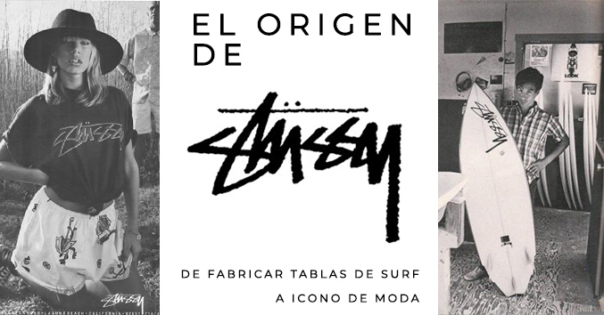
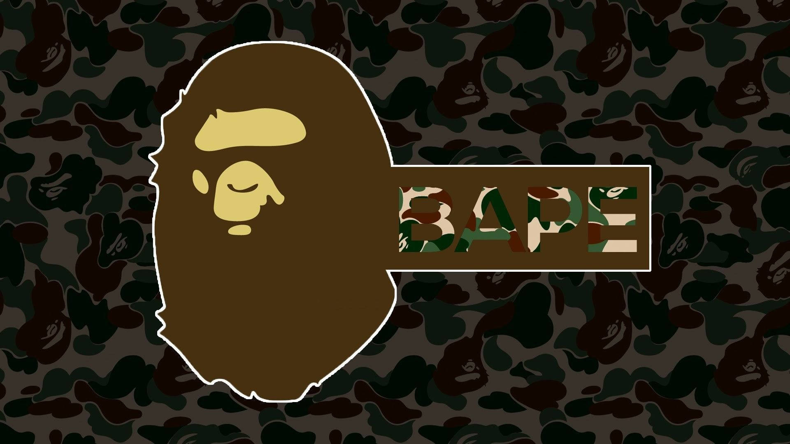
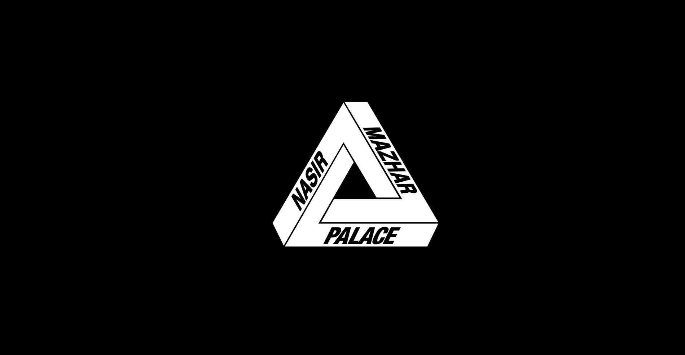
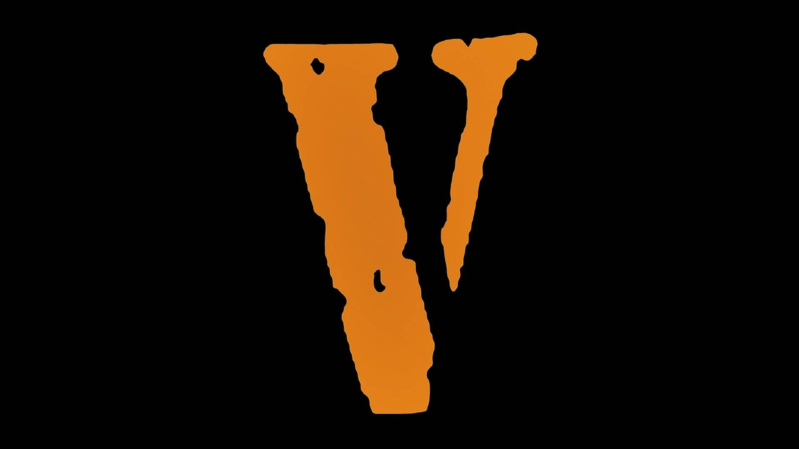
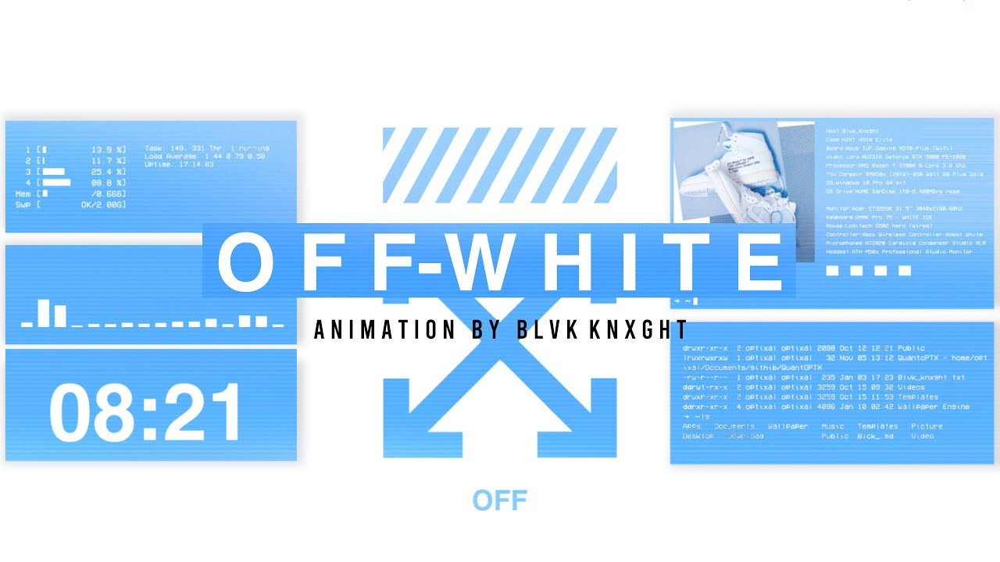
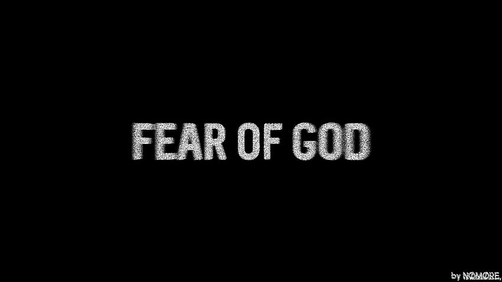

1984
Si hablamos del origen del streetwear, hay un nombre que lo cambió todo: Stüssy. Esta fue la primera marca en mezclar la moda con la cultura callejera de forma auténtica, creando un estilo que hoy se vive en todo el mundo.
La historia comenzó en California en los años 80, cuando Shawn Stüssy, un diseñador de tablas de surf, empezó a estampar su firma en camisetas para promocionar su trabajo. Lo que no se imaginaba era que esas camisetas iban a tener
más éxito que las tablas. Su estilo era fresco, rebelde y muy diferente a lo que se veía en ese momento.
En 1984, Stüssy se transformó oficialmente en una marca. Su ropa combinaba influencias del surf, el skate, el hip hop y la cultura del graffiti,
algo totalmente innovador para la época. No era alta costura, pero sí tenía actitud. Y eso fue lo que atrapó a una generación.

“No se trataba de vender ropa cara. Se trataba de crear algo con estilo, desde la calle para la calle.” – Shawn Stüssy
1993. Tokio, Japón
BAPE:
A Bathing Ape

Desde Japón, BAPE revolucionó el streetwear con su estilo salvaje y colorido. Fundada por Nigo, mezcló influencias del manga, el hip hop y la moda urbana para crear prendas únicas:
camuflajes con tiburones, monos y las míticas Bapesta, zapatillas que se volvieron leyenda. Fue clave para que Asia entrara al mapa del streetwear global.
1994. Nueva York, EE.UU.
Supreme

Supreme empezó como una tienda para skaters y terminó convirtiéndose en el rey del hype. Fundada por James Jebbia, su logo rojo con letras blancas es un ícono del diseño urbano. Supreme rompió reglas
con colaboraciones locas (Louis Vuitton, Nike, The North Face, etc.), lanzamientos limitados y filas kilométricas para conseguir una simple camiseta.
2009. Londres, Reino Unido
Palace

El alma skater de Londres cobra vida con PALACE, una marca irreverente, con un estilo entre lo retro, lo chistoso y lo brutalmente cool. Fundada por Lev Tanju, se caracteriza por sus videos locos, diseños
noventeros y su logo triangular que ya es parte de la cultura pop. Ha colaborado con Adidas, Reebok, Ralph Lauren y sigue creciendo como una fuerza creativa.
2011. Nueva York, EE.UU.
Vlone

VLONE nació del corazón del hip hop y el trap, creada por A$AP Bari y el colectivo A$AP Mob. Su lema, “You live alone, you die alone”, refleja su filosofía de individualismo extremo. Con un estilo oscuro, directo y urbano, sus diseños
simples pero agresivos (como la gran “V” en la espalda) se volvieron íconos. Ha colaborado con Nike, Juice WRLD, Pop Smoke, y es símbolo de rebeldía y cultura joven.
2012. Milán, Italia
Off-White

El genio de Virgil Abloh llevó el streetwear a la pasarela de la moda de lujo con Off-White. Con sus comillas, flechas, etiquetas colgantes y lenguaje gráfico único, transformó
piezas simples en arte. Off-White rompió las barreras entre lo callejero y lo exclusivo, y su impacto se siente tanto en tiendas como en museos, redes y pasarelas.
2013. California, EE.UU.
Fear of God

Fundada por Jerry Lorenzo, Fear of God es la marca que puso el minimalismo con alma en el streetwear. Sus diseños son sobrios, amplios, llenos de tonos neutros y tejidos premium.
FOG mezcla lo espiritual con lo urbano, y ha trabajado con Nike, Zegna y artistas como Kanye West o Justin Bieber. Es el lado más introspectivo del streetwear.